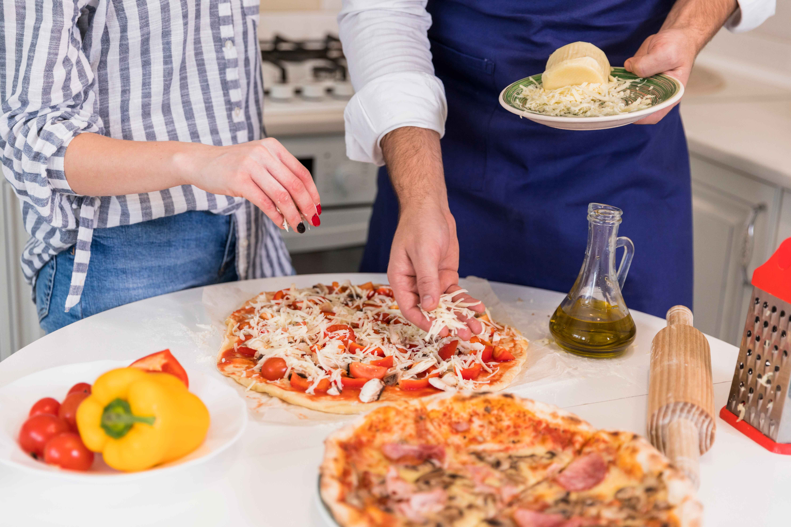
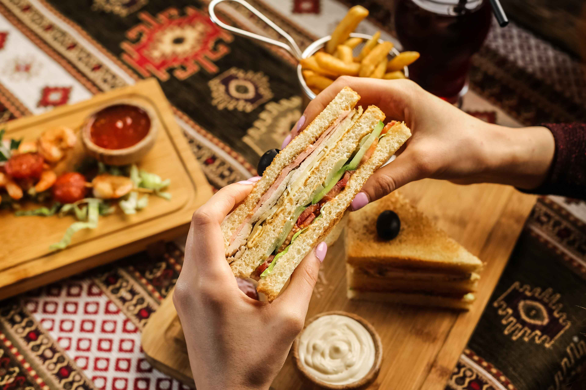

Spread a generous layer of tomato sauce over the base, then add your favorite toppings such as mozzarella cheese, pepperoni, mushrooms, bell peppers, and olives. Sprinkle some dried oregano and a drizzle of olive oil for added flavor. Bake the pizza in the preheated oven for about 10-15 minutes, or until the crust is golden and the cheese is bubbly and slightly browned. For a finishing touch, add fresh basil leaves or a sprinkle of Parmesan cheese. Allow the pizza to cool slightly before slicing and serving.

Pizza Making Recipe
Making a homemade pizza is a delightful and rewarding experience. Start with a basic dough by mixing warm water, yeast, sugar, flour, salt, and olive oil, then knead until smooth and let it rise until doubled in size. Once the dough is ready, preheat your oven to its highest setting and prepare your toppings. Roll out the dough on a floured surface to your desired thickness and transfer it to a pizza stone or baking sheet.

Burger Making Recipe
Creating a delicious homemade burger is a simple yet gratifying culinary adventure. Begin by selecting high-quality ground beef with an 80/20 lean-to-fat ratio, ensuring juicy and flavorful patties. In a bowl, season the beef with salt, pepper, and a dash of Worcestershire sauce, then gently mix without overworking the meat. Form the mixture into equal-sized patties, pressing a slight indentation in the center to prevent puffing cooking.
Preheat your grill or skillet to medium-high heat and lightly oil the surface. Cook the patties for about 4-5 minutes per side for medium doneness, adding a slice of cheese in the last minute to melt if desired. Meanwhile, prepare your burger buns by toasting them until golden. Assemble the burgers by spreading a layer of your favorite condiments, such as mayonnaise, ketchup, or mustard, on the bottom bun. Place the cooked patty on top, followed by fresh toppings like lettuce, tomato, onion, and pickles. Add any additional ingredients like crispy bacon, avocado slices, or a fried egg for extra flair.

Sandwich Making Recipe
To make a delicious sandwich, start by selecting your favorite bread. Whether it's whole wheat, sourdough, or a classic baguette, choose a type that suits your taste and texture preference. Next, gather your desired fillings. For a classic option, consider thinly sliced turkey or ham, crisp lettuce, juicy tomatoes, and creamy mayonnaise. If you're feeling adventurous, experiment with different cheeses like cheddar, Swiss, or pepper jack for added flavor.
Spread a generous layer of your chosen condiment on one slice of bread, then layer your fillings evenly on top. Be sure to distribute them evenly to ensure each bite is packed with flavor. Once your fillings are in place, carefully place the second slice of bread on top, pressing down gently to secure the sandwich. Finally, if you prefer a warm sandwich, you can grill it in a panini press or toaster oven until the bread is golden brown and the cheese is melted.